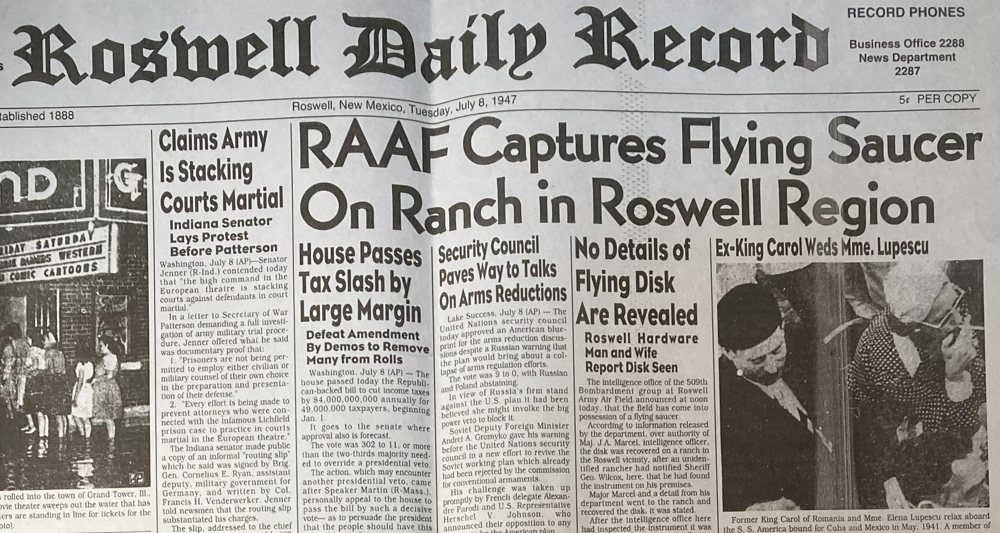

El 8 de julio de 1947, la oficina de información del Roswell Army Air Field emitió un comunicado que sacudió al mundo: el ejército había recuperado un «disco volador» en un rancho de Nuevo México. Al día siguiente, el general de brigada Roger Ramey convocó a la prensa en Fort Worth, Texas, y lo desmintió. Era un globo meteorológico. El caso durmió en el olvido durante treinta años.
Lo que sucedió después es, quizás, más fascinante que el incidente mismo. En 1978, un ufólogo llamado Stanton Friedman entrevistó a un coronel retirado que aseguró que los restos eran claramente extraterrestres y que el ejército había encubierto la verdad. A partir de ahí, Roswell dejó de ser un caso archivado y se convirtió en el epicentro de la ufología mundial. Hoy, con desclasificaciones recientes y renovado interés institucional en los Fenómenos Aéreos No Identificados (UAP), vale la pena regresar al origen y separar lo que sabemos de lo que seguimos especulando.

// Contexto · Verano de 1947
Estados Unidos vivía la primera posguerra y el inicio de la Guerra Fría. Entre mayo y julio de 1947 hubo una auténtica «fiebre de discos voladores»: docenas de avistamientos, titulares a diario, y el miedo atómico flotando en el aire. El avistamiento más famoso de esa temporada fue el de Kenneth Arnold el 24 de junio — nueve objetos brillantes sobre el monte Rainier — que acuñó el término «platillo volador». Cualquier hallazgo aéreo en ese clima encontraba terreno fértil para la amplificación.
Los hechos que nadie disputa
El 2 de julio de 1947, el ranchero William «Mac» Brazel encontró extraños restos en su propiedad cerca de Corona, Nuevo México: hojuelas de aluminio, varillas de madera, fragmentos de goma y papel de aluminio dispersos en un área considerable. Tres días después lo reportó al sheriff de Lincoln. Agentes del Roswell Army Air Field — el mayor Jesse Marcel y oficiales de contrainteligencia — recogieron los materiales esa misma noche y los trasladaron a la base.
Lo que siguió fue el comunicado del 8 de julio, el desmentido del 9 de julio, y después, durante tres décadas, silencio. Cuando el caso resurgió en los años setenta y ochenta, ya no era un incidente menor — era el núcleo de una conspiración global. Los dos únicos registros federales contemporáneos al incidente —un breve acta del FBI y un informe de la USAF— describen el objeto como «semejante a un globo meteorológico de gran altitud con reflector radar». Eso fue todo lo que quedó en papel en 1947.
1947
Brazel encuentra los restos
El ranchero W.W. «Mac» Brazel halla pedazos de material metálico, varillas y goma en su campo de Corona, NM. Suspende los hallazgos pensando en un platillo volante.
1947
Notificación al sheriff
Brazel reporta el hallazgo. El sheriff de Lincoln notifica al Roswell Army Air Field (RAAF).
1947
Recuperación militar
El mayor Jesse Marcel y agentes de Contrainteligencia viajan al rancho y recogen los escombros. Esa noche los trasladan al RAAF.
1947
El comunicado que cambió todo
La oficina del RAAF anuncia la recuperación de un «disco volador». El Roswell Daily Record lo publica en portada. Esa tarde, el gral. Ramey corrige: era un globo meteorológico con reflector radar.
1947
El caso se archiva
Ramey confirma la versión del globo ante más medios. El Roswell Daily Record titula: «Ramey desmiente lo del platillo volante». El incidente pierde relevancia pública durante 30 años.
El largo silencio (1947–1978)
Entre 1947 y finales de los años setenta, Roswell prácticamente no existió en el imaginario colectivo. El caso quedó archivado en el Proyecto Libro Azul — la base de datos oficial de avistamientos OVNI de la USAF — sin mayor repercusión. Lo que sí existía era el secretismo de la Guerra Fría: en esos años, muchos programas militares operaban en la más estricta confidencialidad, y Nuevo México era uno de sus epicentros. El contexto importa.
«En 1947 los globos Mogul perdidos de una misión militar habían caído en la zona de Brazel. El componente principal del secreto era el proyecto en sí, no el objeto encontrado.»
— Informe de la USAF · Caso Cerrado, 1997La documentación militar contemporánea al incidente es escasa por razones mundanas: las regulaciones de la época no exigían reportes detallados de accidentes de globos, y muchos mensajes del RAAF fueron destruidos o nunca enviados por canales formales. Esta laguna documental — perfectamente explicable por la burocracia militar de posguerra — se convertiría décadas después en la principal «evidencia» de encubrimiento para los creyentes.
// El resurgimiento · 1978
El caso volvió al debate público cuando Stanton Friedman, físico nuclear devenido ufólogo, entrevistó al coronel Jesse Marcel — ya retirado — quien afirmó que los restos eran «tan fuertes como aluminio pero no iguales a ningún material conocido» y que el ejército había ocultado la verdad. Sus declaraciones se publicaron en libros que popularizaron la conspiración. Lo que nadie mencionaba era que el expediente personal de Marcel lo describía como alguien con «tendencia a exagerar» — un detalle que la documentación oficial revelaría más tarde.
A partir de ahí, surgieron más testimonios. Entre mediados de los ochenta y los noventa, civiles y militares — muchos en tercer o cuarto nivel de la cadena testimonial — aseguraron haber visto cuerpos extraterrestres, haber sido amenazados para callar, o haber escuchado conversaciones secretas. El problema: ningún testimonio de 1947 —los más cercanos al evento— describió nada semejante. La distancia temporal entre los hechos y los relatos más sensacionales supera los cuarenta años.
// Registro · Los únicos documentos de 1947
Lo que se escribió en el momento
Teletipo FBI (8 julio 1947) — Agentes militares hallaron un disco hexagonal colgado de un gran globo con reflectores. El material fue enviado al cuartel general en Wright Field para ser examinado.
Nota oficial USAF (julio 1947) — Menciona explícitamente «la recuperación de un globo meteorológico de gran altitud con un reflector radar». Lenguaje técnico, sin drama.
Comunicado de prensa RAAF (8 julio) — El único documento oficial que menciona «disco volador». Duró 24 horas antes de ser desmentido por el mando.
Declaración de Brazel al Roswell Daily Record — Describió vagamente «hojuelas de metal, restos de papel de aluminio, varillas de madera». Sin mención a tecnología avanzada ni cuerpos.
// Comentarios